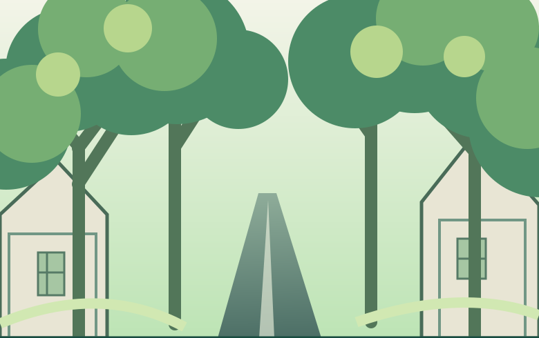

✳ O GUIA DA NOSSA CIDADE SANTA CRUZ DO SUL · RS
Sua cidade.
Todos os caminhos.
Um só lugar.
Do café da manhã ao passeio do fim de semana. Encontre mercados, farmácias, restaurantes, atrações e serviços sem perder tempo procurando.
DE CORAÇÃO
SANTA-CRUZENSE✳ DESDE SEMPRE ✳
SANTA-CRUZENSE✳ DESDE SEMPRE ✳
Um lugar pra chamar
de nosso.
de nosso.
Uma cidade cheia de descobertasDescubra seu próximo destino
TUDO NUM SÓ LUGAR
Ver todos os locais O que você precisa hoje?
Escolha por categoria e encontre o caminho mais rápido.
VALE A DESCOBERTA
Explorar o catálogo Pra começar a explorar.
Alguns endereços digitais que conectam você à cidade.
GUIA DE SANTA CRUZ
Carregando locais...A cidade na palma da mão.
Links selecionados para facilitar a sua rotina.
⌕
Nenhum resultado por aqui
Tente outro termo ou limpe os filtros para descobrir novos lugares.
NOSSA ESSÊNCIAUma cidade com
Uma cidade com
histórias pra contar.
Entre as árvores do Túnel Verde, as torres da Catedral e o movimento da Oktoberfest, Santa Cruz do Sul mistura tradição germânica, encontro e uma energia que é só daqui.
Este portal nasceu para conectar quem vive, visita, trabalha e empreende na cidade — sem deixar os bons lugares escondidos em mil abas.
Conhecer o turismo oficial29°43′ S 52°26′ ORS · BRASIL

PELAS RUAS DA SANTINHATradição + movimento + futuro
BOM SABER
Mais que um diretório.
Informações úteis para navegar pela cidade.